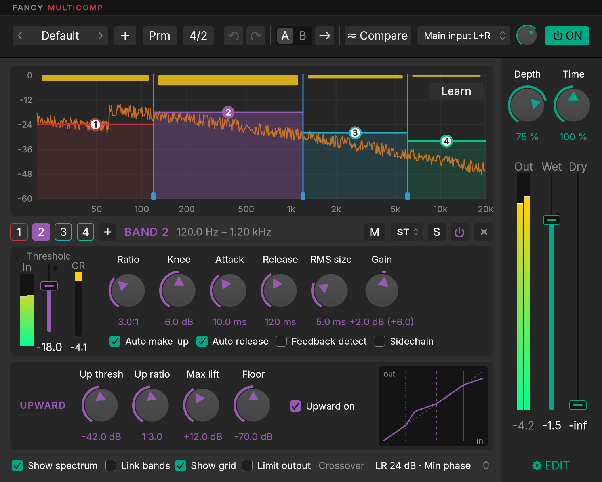
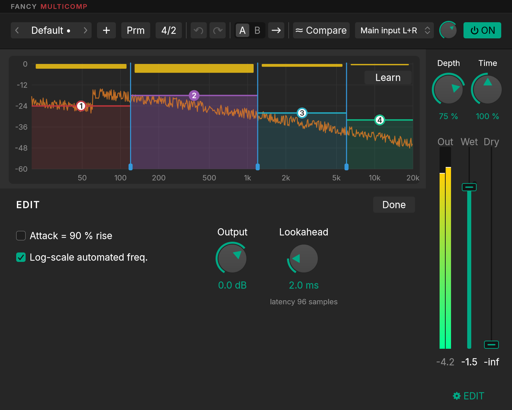

docs/multicomp.md, Phase 4 Wave 2: per-band lookahead, detector EQ, crossover slope and GR history (items 23 to 26), Decisions 1 to 4 A. New things in dashed yellow, on the plugin's real screenshot (1x coordinates).
1 · The main window: a Look knob per band, the view switch and a crossover's slope
Look (0 to 10 ms) joins the band row after Gain, in the row's free space. A Spectrum | GR history switch sits at the graph's top left. Right-clicking a crossover line opens its slope menu (here crossover 2 set to LR 48).

Spectrum
GR history
CROSSOVER 2 · 1.20 kHz
LR 24 dB/oct
✓ LR 48 dB/oct
The window keeps its size: the band card already had room after Gain. The latency is the largest Look of any band, and the bands stay lined up. Saved projects load every band at their old Lookahead, so they render as before, to the bit. Per-crossover slopes apply to the LR crossover types; Linear and Dynamic phase keep their own shapes, so the menu dims there.
2 · The graph in GR history
Each band's gain reduction over the last 3 s, one lane per band in its colour, with its peak at the right. It replaces the spectrum while chosen and draws only while the window is open.
Spectrum
GR history
last 3 s · peak dB at right
A view switch, not a parameter: it isn't saved with the project.
3 · The EDIT drawer
Lookahead becomes Set all bands: turning it moves every band's Look at once. A detector EQ section for the selected band (HP and LP, Off or 20 Hz to 20 kHz at 24 dB/oct, and Tilt, −6 to +6 dB/oct; all off by default) and a row per crossover for its slope fill the drawer's free lower half.

Set all bands
moves every band's Look
BAND 2 · DETECTOR EQ
Shapes only what band 2's detector hears, never its audio. Follows the selected band tab.
CROSSOVER SLOPES
1–2 · 120 HzLR 24 dB/oct
2–3 · 1.20 kHzLR 48 dB/oct
3–4 · 6.00 kHzLR 24 dB/oct
Detector EQ off isn't run. Picking LR 24 or LR 48 in the main window's Crossover menu still sets all three slopes at once.